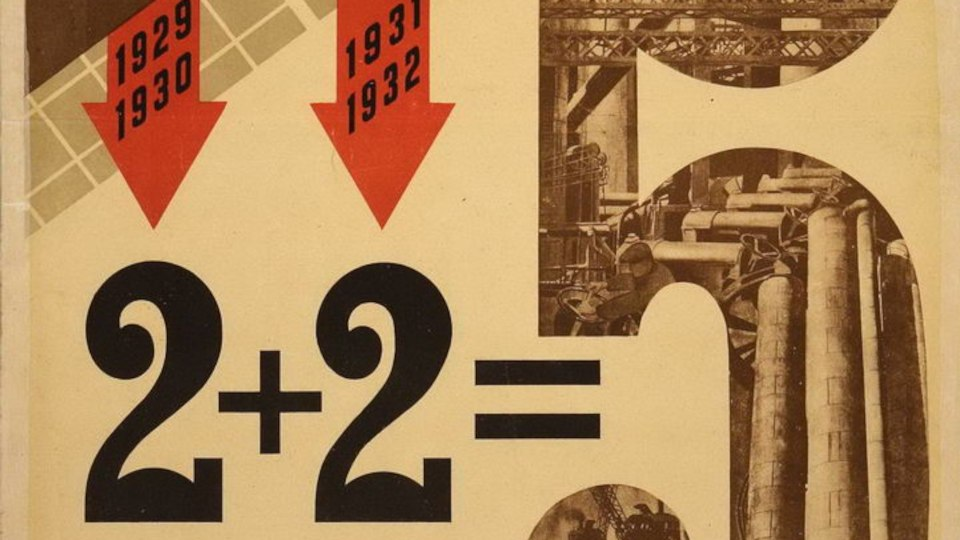

I have discussed Orwell before; his point is that fascism gains power when we replace the truth with a lie.
His most famous novel is 1984, a story where the government is constantly revising history to fit The Party’s narrative, replacing the truth with a fantasy where The Party’s lies are true.
For people who have not had the chance to read this great classic, this book can be read online here (the book is public domain in Canada).
Warning: Spoilers for this book follow.
Recently, a lady tried to read it and was greatly disturbed by the following scene in the first chapter:
Suddenly, by the sort of violent effort with which one wrenches one’s head away from the pillow in a nightmare, Winston succeeded in transferring his hatred from the face on the screen to the dark-haired girl behind him. Vivid, beautiful hallucinations flashed through his mind. He would flog her to death with a rubber truncheon. He would tie her naked to a stake and shoot her full of arrows like Saint Sebastian. He would ravish her and cut her throat at the moment of climax. Better than before, moreover, he realized why it was that he hated her. He hated her because she was young and pretty and sexless, because he wanted to go to bed with her and would never do so, because round her sweet supple waist, which seemed to ask you to encircle it with your arm, there was only the odious scarlet sash, aggressive symbol of chastity.
At this point, she stopped reading the book.
Radical left wing feminists responded to this by supporting her decision, dismissing the book 1984 in the process. As just one example, one radical left wing feminist called it “misogynistic shit.”
The reason why Winston had this very dark fantasy is because he is the product of trauma: He has been so deeply traumatized and filled with hatred because of the oppressive government he lives in, he has a very dark and violent fantasy in his private thoughts. This is one way The Party stays in power: It redirects the hatred people have living in such squalid conditions towards other things, so they they will not revolt against The Party.
Later on, Winston gets to know this woman and they talk about the evil dark fantasy:
“I hated the sight of you,” he said. “I wanted to rape you and then murder you afterwards. Two weeks ago I thought seriously of smashing your head in with a cobblestone. If you really want to know, I imagined that you had something to do with the Thought Police.”
The girl laughed delightedly, evidently taking this as a tribute to the excellence of her disguise.
(The Thought Police is a group, disguised as normal people, who look for people who oppose the ideology of The Party, and get them arrested.)
The reason Winston had this horrible fantasy is because he was the product of trauma, and, as a trauma response, inappropriately redirects his hatred towards other targets.
Thankfully, the woman had enough emotional maturity to understand this, and did not hold his inappropriate trauma response against him.
The radical feminist left has a similar hatred of men. This hatred is almost always a trauma response, from women who did not have good father figures in their lives. This is why they have inappropriate trauma responses, such as dismissing the book 1984 when they should instead read and understand the book.